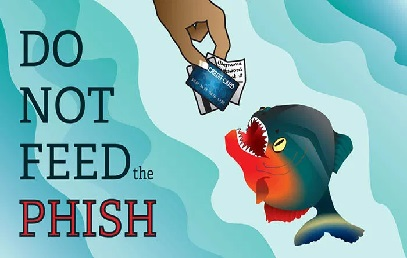
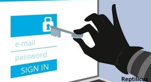

Фишинг
Это подмена сайтов. Визуально сайты выглядят как настоящие, но в итоге людей всеми возможными методами направляют на «сайт-мошенник», где пользователи собственноручно оправляют личные конфиденциальные данные злоумышленникам.
Чтобы не попасть в такую ловушку, всегда, перед тем как ввести свои данные, проверяйте адрес (домен) в строке браузера, если хоть один символ изменён – это фишинг.
Важно!
 Особенно бдительным нужно быть когда посещаете сайты платёжных систем, хотя могут подделывать и сайты соцсетей. Если вас вдруг выкинуло на страницу авторизации, проверьте адрес сайта.
Онлайн-казино
Это предложение выигрыша при помощи использования хитроумных методик игры. Возможно вы тоже встречали рекламу:«Я зарабатываю 300$ в день обыгрывая казино». Или что-то подобное.
Финансовые пирамиды
Не поспоришь, в этом случае существуют организации, которые на самом деле выплачивают деньги, но их количество минимально, большая часть из них – это лохотроны.
Зачастую деньги получают только наиболее активные сотрудники, которые приводят всё новых и новых клиентов. И когда в организации их становится слишком много, организация прекращает своё существование.В некоторых случаях такие компании делают рестарт проекта. Вкладчикам говорят: «мы исправили слабые стороны нашего маркетинг плана». А на деле кантора сворачивается и пытается выжать ещё немного денег.
Взломы (сайтов, кошельков, профилей)
Такие инструменты популярны исключительно из-за веры людей в такие сервисы. И в виде специального программного обеспечения распространяются всевозможные вирусные программы. И вместо того чтобы получить программку по взлому, допустим, аккаунта в соцсетях, такой умник сам становится жертвой обмана в интернете.
Со взломанного аккаунта можно оказывать влияние на друзей и близких. Например, просить в долг, уговорить полнить телефон или заплатить за интернет. Но есть очень жестокие и аморальные методы выманить деньги у ваших друзей, они являются самыми прибыльными.